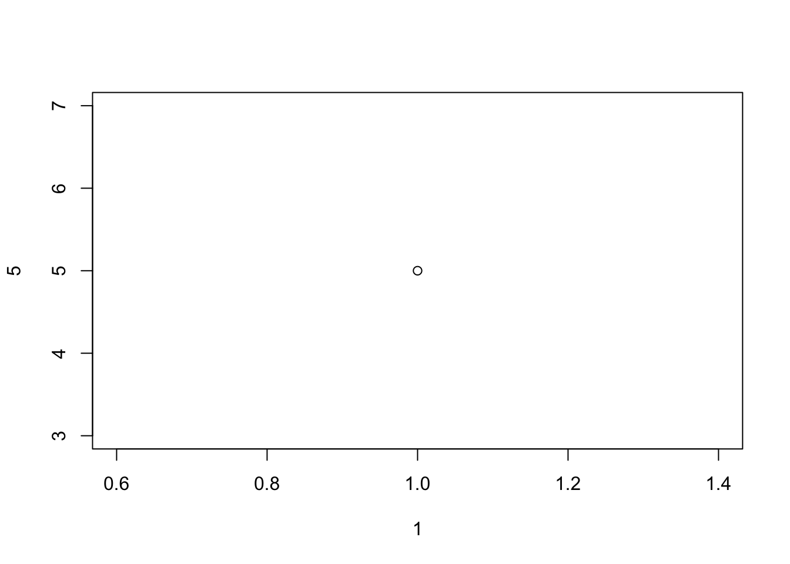

# Try your first R command
2 + 2[1] 4This guide will help you get set up with R and RStudio for the IFP statistics and data skills modules. Please work through it before or during the first lab.
You have two main ways of using R and RStudio.
For the MSDA tutorial sessions, you will use the university computers, which already have R and RStudio installed. You do not need to download or install anything yourself.
Sit at any available computer in the lab.
Log in using your university email address and password.
Once you are logged in:
Click on the Start Menu (bottom left).
Type RStudio in the search bar.
Click the RStudio application when it appears.
RStudio will open and start an R session automatically.
You do not need to install or configure anything.
If you prefer to work on your own laptop, install R and then RStudio Desktop.
Install R from the official website:
https://cran.r-project.org/
Choose your operating system (Windows, macOS, or Linux) and follow the download and install instructions.
Install RStudio Desktop from:
https://posit.co/download/rstudio-desktop/
Once installed, open RStudio. It should automatically find your R installation.
You only need to install R and RStudio once. After that you just open RStudio.
It is good practice to keep all the files for a course in one project folder.
In your Documents (or another sensible location), create a new folder called e.g. IFP_Stats.
Open RStudio.
In the top-right of RStudio, click Project (None) > New Project….
Choose Existing Directory.
Click Browse, select your new IFP_Stats folder, then click Choose (or Open), and finally Create Project.
You should now see the project name at the top-right of RStudio. Any files you create will live inside this folder.

When your project is open, RStudio is usually split into four panes:
Console (bottom left): where R commands are run.
Editor / Source (top left): where you write and edit scripts and R Markdown documents .
Environment / History (top right): where R’s “memory” is listed (list data and objects).
Files / Plots / Help / Packages (bottom right): where you see your files, graphs, help pages and installed packages.
We will mainly use the Console and the Editor at the beginning, then the other panes as we go.

Everything you type in the Console is sent directly to R. The rest of the interface helps you organise, edit, and visualise your work.
# Try your first R command
2 + 2[1] 4You should see:
[1] 4Place your cursor in the Console and try typing:
2 + 2[1] 410 - 3[1] 74 * 5[1] 2020 / 4[1] 53^2 # three squared[1] 9Press Enter after each line. R evaluates the expression and prints the answer.
R can also answer “true/false” questions:
3 < 5[1] TRUE3 > 5[1] FALSE3 == 3 # equal to[1] TRUE3 != 5 # not equal to[1] TRUEThese return TRUE or FALSE values.
In R, you create and store values by assigning them to a name. The assignment operator is:
<-This symbol is pronounced “arrow”, and it tells R to store a value in a named object.
The general structure is:
[name] <- [value]For Example:
x <- 5This creates an object called x and stores the value 5 inside it.
There are a few important rules to follow when choosing names in R.
Names cannot contain spaces.
lucky_number <- 5 ✔
lucky number <- 5 ✘(The spaces around <- do not matter; only spaces inside the name are not allowed.)
A name must begin with a letter, not a number.
lucky_number <- 5 ✔
1lucky_number <- 5 ✘Capital letters matter.
lucky_number
Lucky_NumberThese refer to different objects.
R has a set of reserved words that already have a special meaning. These include:
if, else, for, in, TRUE, FALSE, NULL, NA, NaN, function
You do not need to memorise these. If you accidentally try to use one, R will warn you.
After running a line such as:
x <- 5Here we have created an object called x with the value 5. You can now use x in later calculations. You should also see xappear in the Environment pane.

Try using the stored x:
x[1] 5x * 3[1] 15Typing everything in the Console is fine for quick tests, but it is not ideal for saving your work. Instead we normally write code in a script and send it to the Console.
Go to File > New File > R Script.
In the new script window (top left), type:
x <- 210
y <- 15
x / y[1] 14Ctrl + Enter (Windows)
Cmd + Enter (macOS)
R sends that line to the Console and runs it, then moves your cursor to the next line. Press it again to run the next lines.
x to another number and re-run the lines.To save your script:
Click File > Save.
Give it a sensible name, e.g. week1_examples.R, and save it in your IFP_Stats project folder.
You should now see the file listed under the Files tab (bottom right).
Add this line at the bottom of your script:
plot(1, 5)
Run it. A small plot should appear in the Plots tab.
For your IFP coursework you may write short reports that combine text, code and output. R Markdown lets you do this in one document.
Go to File > New File > R Markdown….
In the pop-up:
Title: e.g. IFP Intro Lab
Author: your name
Leave “HTML” as the default output for now.
Click OK. RStudio creates a template document.
Delete everything below the first code chunk so you start with a mostly empty file.
Insert a new R code chunk by either:
Clicking Insert > R at the top of the editor, or
Pressing Ctrl + Alt + I (Windows) or Option + Cmd + I (macOS).
Inside the grey chunk, type:
print("Hello from the IFP!")[1] "Hello from the IFP!"You can run the chunk in three ways:
Put the cursor on the first line and press Ctrl/Cmd + Enter repeatedly.
Click the small green play button at the top right of the chunk.
With the cursor inside the chunk, press Cmd + Shift + Enter (macOS) or Ctrl + Shift + Enter (Windows).
The output appears just under the chunk.
At the top of your document, in the first code chunk, add:
# Packages used in this document
library(tidyverse)── Attaching core tidyverse packages ──────────────────────── tidyverse 2.0.0 ──
✔ dplyr 1.1.4 ✔ readr 2.1.5
✔ forcats 1.0.0 ✔ stringr 1.5.1
✔ ggplot2 3.5.2 ✔ tibble 3.3.0
✔ lubridate 1.9.4 ✔ tidyr 1.3.1
✔ purrr 1.1.0
── Conflicts ────────────────────────────────────────── tidyverse_conflicts() ──
✖ dplyr::filter() masks stats::filter()
✖ dplyr::lag() masks stats::lag()
ℹ Use the conflicted package (<http://conflicted.r-lib.org/>) to force all conflicts to become errorsThis assumes you have installed the tidyverse package (see below). Any messages that appear under the chunk are fine; they are just information.
Outside code chunks, you write text as usual. R Markdown uses the # symbol to create headings in the final document. For example:
# R code examples
In this section we will try some basic R commands.Heading levels work as follows:
# gives a main heading,
## gives a subheading,
### gives a smaller subheading, and so on.

Be aware that:
Inside code chunks, # creates an R comment that R will ignore.
Outside code chunks, # creates a heading in the report.
RStudio provides two ways of editing an R Markdown document:
This shows the raw Markdown file, including:
code chunks,
formatting symbols (e.g. #, **bold**, *italics*),
and output-format instructions.
Use this mode when you want full control over your document.

This behaves more like a word processor:
You see headings, formatting, and lists as they will appear in the final document,
Code chunks are shown as blocks that you can edit without typing backticks.
Visual mode is easier for beginners, but Source mode is useful once you want more precision in formatting.
You can switch between them at any time using the Source/Visual toggle at the top left of the editor.

R can be extended with thousands of add-on packages. We will mainly use tidyverse, which includes tools for data handling, plotting and working with R Markdown.
You only need to install a package once per computer.
In the Console (not in an R Markdown chunk), type:
install.packages("<package name>")install.packages("tidyverse")and press Enter. This will download and install the package. It may take a few minutes.
On some university servers tidyverse may already be installed. If so, install.packages() is not necessary there.
Each time you start RStudio, you need to load any packages you want to use:
library(<package name>)library(tidyverse)You usually put these library() calls near the top of your script or R Markdown file so that anyone reading your code can see which packages they need.
The next time you begin an R session, you’ll have to reload the package with library if you want to use it, but you won’t have to reinstall it. You only have to install each package once.
We often want to work with data saved in a spreadsheet.
Open Excel, LibreOffice Calc, Google Sheets or similar.
Create a tiny data set, for example:
Column 1: student
Column 2: score
Fill in a few rows with names and marks.
Save the file as CSV (Comma-Separated Values) and call it something like ifp_scores.csv.
Make sure you save it inside your IFP_Stats project folder.
In a new code chunk in your R Markdown file, or in a script, type:
library(tidyverse)
scores <- read_csv("ifp_scores.csv")Rows: 5 Columns: 2
── Column specification ────────────────────────────────────────────────────────
Delimiter: ","
chr (1): student
dbl (1): score
ℹ Use `spec()` to retrieve the full column specification for this data.
ℹ Specify the column types or set `show_col_types = FALSE` to quiet this message.scores# A tibble: 5 × 2
student score
<chr> <dbl>
1 Ana 82
2 Sam 74
3 Jae 91
4 Luis 67
5 Mira 88Helpful tip: if your cursor is between the quotation marks " " inside read_csv("") and you press Tab, RStudio will show a list of files in your project so you can choose the correct name.
The object scores should now appear in the Environment pane. To see how many rows and columns there are, use:
dim(scores)[1] 5 2To see the structure of the data:
glimpse(scores)Rows: 5
Columns: 2
$ student <chr> "Ana", "Sam", "Jae", "Luis", "Mira"
$ score <dbl> 82, 74, 91, 67, 88A couple of small changes will make your life easier.
Go to Tools > Global Options….
Under General, untick “Restore .RData into workspace at startup”.
Set “Save workspace to .RData on exit” to “Never”.
Click Apply and OK.
This means RStudio will start with an empty workspace each time, so you must re-run your scripts to recreate objects. This is good practice and avoids confusing “left-over” objects.
Go to Tools > Global Options… again.
Click Code in the left-hand menu.
Tick “Soft-wrap R source files”.
Click Apply and OK.
Now long lines of code will wrap inside the editor, so you do not have to scroll sideways.
Once you have:
Loaded the packages you need,
Written some text,
Added a few code chunks,
you can create a finished document.
Save your R Markdown file as e.g. ifp_intro_lab.Rmd.
Click the Knit button at the top of the editor.
Choose Knit to HTML (or PDF if you have LaTeX installed).
RStudio will run all the code in the document and produce a nicely formatted report. You can hand this in (following your module instructions) or keep it as notes.

By the end of this “getting started” guide you should be able to say:
I can open RStudio via the university server or on my own laptop.
I have created an IFP_Stats project.
I know where the Console, Editor, Environment and Files/Plots/Help panes are.
I can use R as a calculator and store values with <-.
I can write and save an R script and run lines of code from it.
I can create a simple R Markdown document, add code chunks and text, and knit it.
I have installed (if needed) and loaded the tidyverse package.
I can read a small .csv data file into R with read_csv().
If most of these are ticked off, you are ready for the IFP statistics labs.
Console: where the code gets executed
Environment: R’s memory, it lists all the names of things with stuff stored into them
Editor: where we edit code
R script: a file with R code and comments
Rmarkdown document: an enhanced file where you can combine together R code, explanatory text, and plots.
packages (also library): user-created bundles providing additional functionality to your local R installation
functions: they take inputs, do some transformation or computation on them, and return a result (output)
?: returns the help page of a function, e.g. ?dim.
| Symbol | Description | Example |
|---|---|---|
| + | Adds two numbers together | 2+2 – two plus two |
| – | Subtract one number from another | 3–1 – three minus one |
| * | Multiply two numbers together | 3*3 – three times three |
| / | Divide one number by another | 9/3 – nine divided by three |
| ( ) | Group operations together | (2+2)/4 is different from 2+2/4 |
| ^ | To the power of | 4^2 – four squared |
| <- | Stores an object in R with the LHS as the name and the RHS as the value | x <- 10 |
| = | Stores an object in R with the LHS as the name and the RHS as the value | x = 10 |
| < | Is less than? | 2 < 3 |
| > | Is greater than? | 2 > 3 |
| <= | Is less than or equal to? | 2 <= 3 |
| >= | Is greater than or equal to? | 2 >= 2 |
| == | Is equal to? | (5+5) == 10 |
| != | Is not equal to? | (2+3) != 4 |
| c() | Combines values into a vector (a sequence of values) | c(1,2,3,4) |